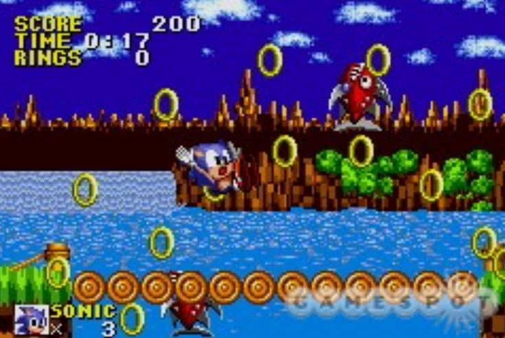

Sonic the Hedgehog

Fecha de lanzamiento: 23 de junio de 1991
Género: Plataformas
Desarrollador: Sega
Copias vendidas: 15 millones
Sinopsis: Sonic, el veloz erizo azul, lucha contra el Dr. Robotnik para salvar a los animales del bosque y recuperar las Esmeraldas del Caos.